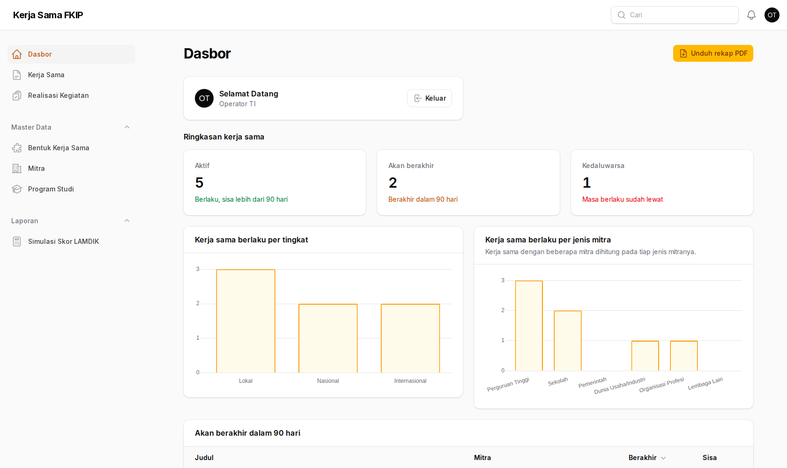
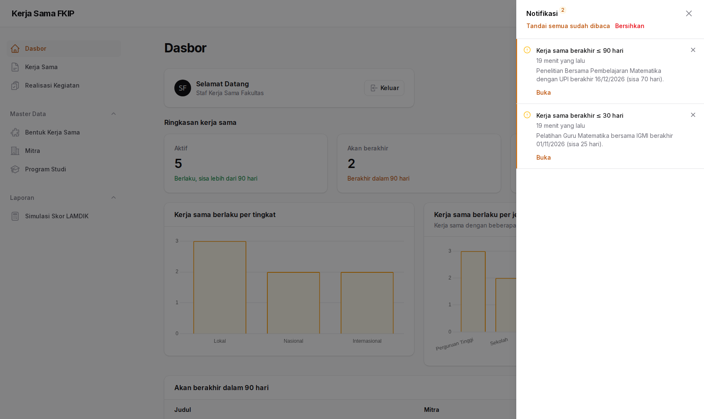
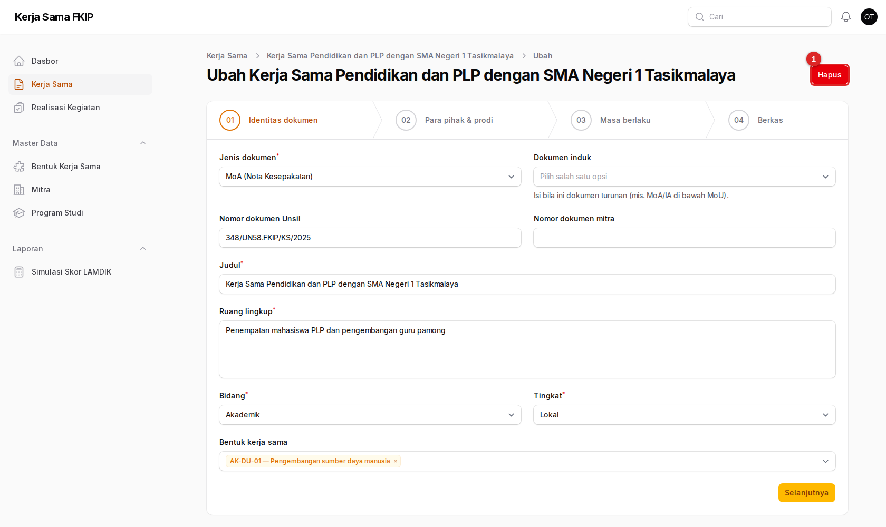

Panduan Super Admin
Untuk pengembang atau operator TI: kewenangan penuh pada aplikasi, ditambah tugas di sisi server seperti membuat akun, mengimpor data awal, dan menjalankan pengingat terjadwal.
01Peran Anda
Di dalam aplikasi, hak Super Admin sama dengan Admin Fakultas pada semua menu. Kekhususannya ada di sisi server.
Yang dapat Anda lakukan
- Seluruh yang dapat dilakukan Admin Fakultas: mengelola dokumen, master data, dan memverifikasi realisasi
- Membuat akun pengguna dan menetapkan peran (lewat perintah server)
- Mengimpor data awal dari CSV
- Mengatur ambang hari dan penjadwalan pengingat
Yang tidak dapat Anda lakukan
- Menghapus data secara permanen: tidak ada fitur untuk itu bagi siapa pun
- Menerima pengingat jatuh tempo: penerimanya Admin Fakultas dan pimpinan/kaprodi prodi terkait

Untuk pekerjaan harian (verifikasi, evaluasi, ekspor, kelola mitra), ikuti panduan Admin Fakultas. Halaman ini hanya membahas hal yang khusus untuk Anda.
02Menyiapkan dan menjalankan sistem
Sistem berjalan di Docker: kerjasama-php dan kerjasama-nginx. Perintah di bawah dijalankan dari folder proyek.
docker compose up -d kerjasama-php kerjasama-nginx
docker exec kerjasama-php php artisan migrate --seed --force
docker exec kerjasama-php php artisan testAplikasi dapat dibuka di http://localhost:8025/admin pada lingkungan lokal. Seeder membuat empat peran, bentuk kerja sama baku, 13 program studi FKIP, dan satu akun Super Admin.
Variabel .env | Fungsi |
|---|---|
SUPER_ADMIN_EMAIL, SUPER_ADMIN_PASSWORD | Akun Super Admin awal. Wajib diisi bila seeding dijalankan di luar lingkungan local/testing; bila kosong di lingkungan lokal, kata sandi bawaan dipakai. |
KERJASAMA_AMBANG_AKAN_BERAKHIR | Ambang hari untuk status “Akan berakhir” (bawaan 90). |
DB_* | Koneksi MariaDB (driver mariadb). |
Segera ganti kata sandi bawaan bila akun dibuat di lingkungan lokal lalu datanya dipakai di tempat lain. Jangan menjalankan seeding dengan kata sandi bawaan di server nyata.
03Membuat akun dan menetapkan peran
Aplikasi belum memiliki layar pengelolaan pengguna; akun dibuat lewat tinker. Peringatan psysh pada baris pertama keluaran dapat diabaikan.
Empat peran yang tersedia: super_admin, admin_fakultas, admin_prodi, dan pimpinan.
Admin Fakultas atau Pimpinan tingkat fakultas (tanpa prodi)
docker exec -it -e HOME=/tmp kerjasama-php php artisan tinker
>>> $u = App\Models\User::create(['name' => 'Nama Lengkap', 'email' => 'nama@unsil.ac.id', 'password' => 'kata-sandi-awal']);
>>> $u->assignRole('admin_fakultas');Admin Prodi atau Kaprodi (terhubung ke prodi)
>>> $prodi = App\Models\Prodi::where('kode', 'PMAT')->value('id');
>>> $u = App\Models\User::create(['name' => 'Nama Lengkap', 'email' => 'admin.pmat@unsil.ac.id', 'password' => 'kata-sandi-awal', 'prodi_id' => $prodi]);
>>> $u->assignRole('admin_prodi'); // atau 'pimpinan' untuk kaprodi| Kode prodi | Program studi |
|---|---|
| PMAS | Pendidikan Masyarakat |
| PBIN | Pendidikan Bahasa Indonesia |
| PBIG | Pendidikan Bahasa Inggris |
| PMAT | Pendidikan Matematika |
| PBIO | Pendidikan Biologi |
| PEKO | Pendidikan Ekonomi |
| PGEO | Pendidikan Geografi |
| PSEJ | Pendidikan Sejarah |
| PJAS | Pendidikan Jasmani |
| PFIS | Pendidikan Fisika |
| PKOR | Pendidikan Kepelatihan Olahraga |
| PSNI | Pendidikan Seni Pertunjukan |
| PPG | Pendidikan Profesi Guru |
Admin Prodi wajib memiliki prodi_id. Tanpa itu, ia tidak dapat membuat kerja sama maupun realisasi. Kata sandi disimpan ter-hash otomatis; minta pengguna menggantinya setelah pertama masuk.
Pimpinan yang prodi_id-nya diisi (kaprodi) menerima pengingat jatuh tempo untuk dokumen prodinya. Pimpinan tanpa prodi (misalnya dekan) tidak menerima pengingat.
Mengatur ulang kata sandi
>>> App\Models\User::where('email', 'nama@unsil.ac.id')->first()->update(['password' => 'kata-sandi-baru']);Mengganti peran
>>> App\Models\User::where('email', 'nama@unsil.ac.id')->first()->syncRoles(['pimpinan']);04Impor data awal dari CSV
Memasukkan data kerja sama yang selama ini tersimpan di Excel atau Drive.
- Siapkan empat berkas CSV dalam satu folder (templat ada di
contoh-data/):prodi.csv,mitra.csv,kerja_sama.csv,realisasi_kegiatan.csv. - Pastikan pemisah koma, encoding UTF-8, baris pertama berisi header yang tidak diubah, dan tanggal berformat
YYYY-MM-DD. - Hapus baris contoh (kolom pertama berawalan
CONTOH). Importer mengabaikannya, tetapi lebih rapi bila dihapus. - Jalankan perintah impor.
docker exec kerjasama-php php artisan kerjasama:impor storage/app/impor
docker exec kerjasama-php php artisan kerjasama:impor storage/app/impor --user=admin@unsil.ac.id- Impor idempoten: dijalankan ulang dengan data yang sama tidak menggandakan baris.
--usermenetapkan pengguna pencatat; bila dihilangkan, dipakai Super Admin pertama.- Kolom banyak-nilai dipisah
|, misalnyaPMAT|PBIO. Kunci penghubung:prodi.kode,mitra.nama,kerja_sama.kode_impor. - Berkas PDF tidak diimpor lewat CSV: taruh di subfolder
berkas/dengan nama yang dirujuk kolomberkas_dokumen, atau unggah manual setelah impor.
Berkas CSV berisi data mitra nyata sensitif. Folder storage/app/impor/ sengaja dikecualikan dari repositori; hapus berkas setelah impor selesai.
05Penjadwalan pengingat
Pengingat jatuh tempo berjalan otomatis bila penjadwal Laravel aktif.
Perintah kerjasama:kirim-pengingat dijadwalkan setiap hari pukul 07.00 (zona waktu Asia/Jakarta) tanpa tumpang tindih. Agar berjalan, jalankan penjadwal lewat cron setiap menit:
* * * * * cd /path/ke/proyek && docker exec kerjasama-php php artisan schedule:run >> /dev/null 2>&1Untuk menjalankannya sekarang (mis. saat uji):
docker exec kerjasama-php php artisan kerjasama:kirim-pengingat
# keluaran contoh: Pengingat terkirim untuk 2 kerja sama.- Ambang hari: 180, 90, 30 sebelum tanggal berakhir. Setiap dokumen hanya mendapat satu pengingat per ambang.
- Dokumen yang baru masuk dengan sisa lebih sedikit hanya mendapat ambang terkecil yang terlewati; ambang yang lebih besar ditandai terkirim agar tidak menyusul.
- Penerima: seluruh Admin Fakultas, serta pimpinan/kaprodi yang prodinya terlibat. Saluran: notifikasi di sistem dan surel.

Pengiriman surel memerlukan konfigurasi surel (MAIL_*) pada .env. Tanpa itu, notifikasi di sistem tetap sampai tetapi surel tidak terkirim.
06Menghapus dan memulihkan data
Semua penghapusan bersifat soft delete.

- Hapus — menyembunyikan dokumen; datanya tetap ada di basis data.
Untuk memulihkan, buka daftar Kerja Sama, buka Filter, atur Data terhapus, lalu tekan Pulihkan pada baris dokumen yang dimaksud.

- Data terhapus — tampilkan dokumen yang sudah dihapus untuk dipulihkan.
Penghapusan permanen (force delete) dilarang oleh kebijakan akses untuk semua peran, termasuk Super Admin. Bila benar-benar harus dihapus, lakukan langsung pada basis data dengan pencadangan terlebih dahulu.
07Keamanan dan berkas
- Berkas privat. Naskah perjanjian dan bukti disimpan pada disk privat. Tidak ada tautan publik; pengunduhan melewati rute berotorisasi (
/kerja-sama/{id}/berkas/…dan/bukti/{id}) yang mewajibkan pengguna masuk. - Otorisasi di sisi server. Pembatasan peran ditegakkan lewat Policy Laravel. Menyembunyikan tombol bukan satu-satunya pengaman.
- Batas unggahan. PDF maksimal 10 MB dan foto maksimal 5 MB (
config/kerjasama.php); sesuaikan jugaclient_max_body_sizepada Nginx bila perlu. - Pengujian.
php artisan testmencakup Policy per peran, perhitungan status, alur verifikasi, impor idempoten, dan otorisasi unduh berkas. Jalankan sebelum dan sesudah setiap penerapan. - Pencadangan. Cadangkan basis data
db_kerjasamadan folderstorage/app(berkas privat) bersamaan.
08Bantuan
Pengguna melapor “tidak bisa masuk”
Periksa apakah akunnya punya peran: User::where('email', …)->first()->getRoleNames(). Akun tanpa peran tidak dapat membuka panel.
Pengingat tidak terkirim
Pastikan schedule:run berjalan lewat cron, ada Admin Fakultas atau kaprodi penerima, dan dokumennya memang melewati ambang 180/90/30 hari. Uji dengan menjalankan kerjasama:kirim-pengingat secara manual.
Impor berhenti dengan “Pengguna pencatat tidak ditemukan”
Jalankan seeder agar Super Admin ada, atau berikan --user=surel@… yang valid.
Seeding gagal dengan “SUPER_ADMIN_PASSWORD wajib diisi”
Di luar lingkungan local/testing, isi SUPER_ADMIN_PASSWORD pada .env sebelum menjalankan seeder.
Dasar-dasar penggunaan ada di beranda panduan.